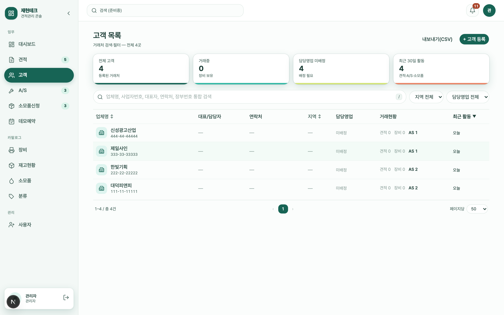
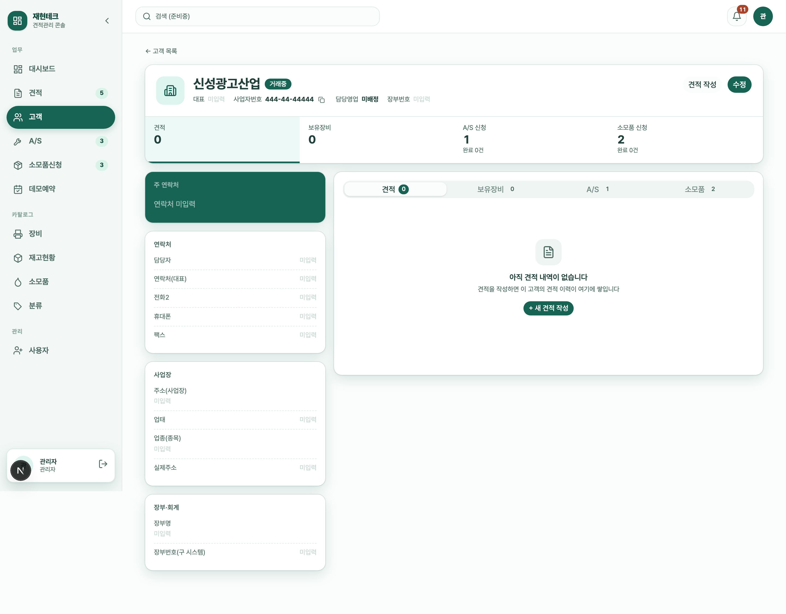
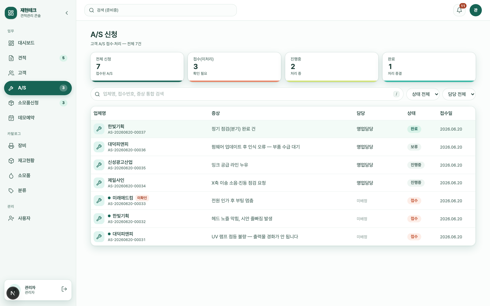
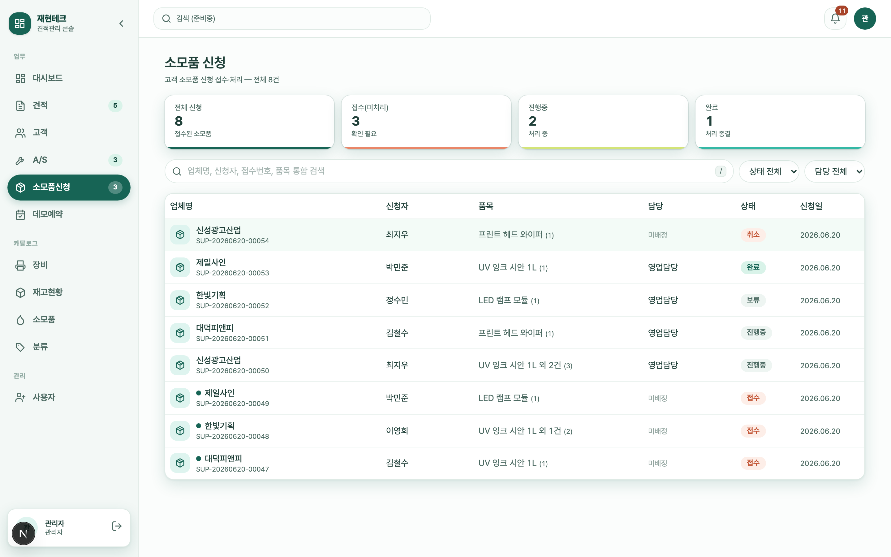
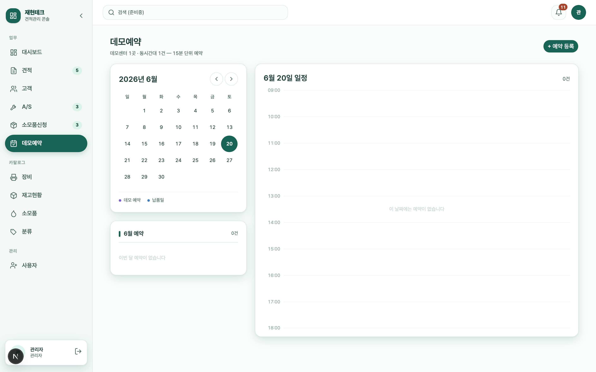
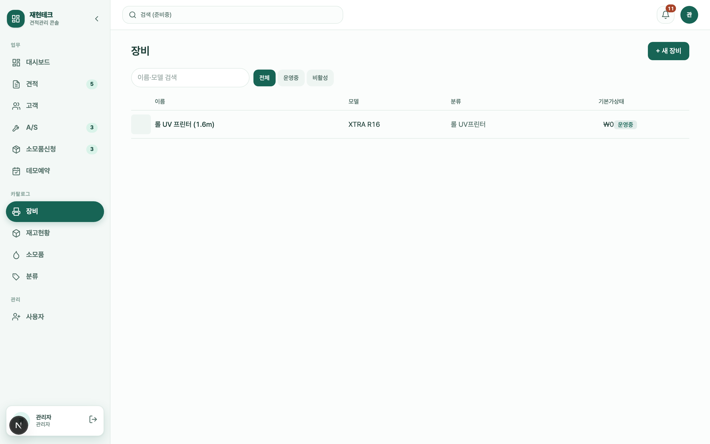
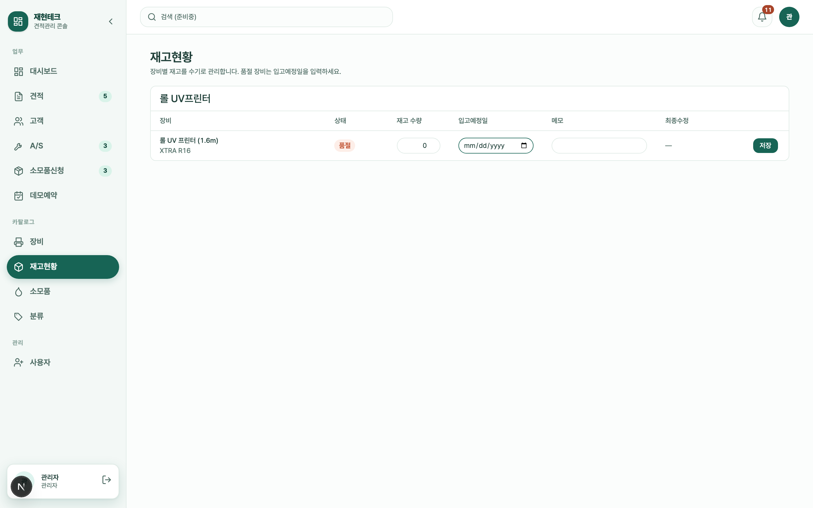
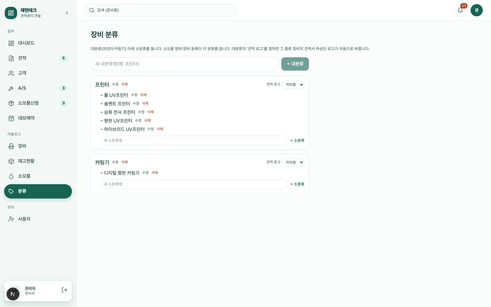
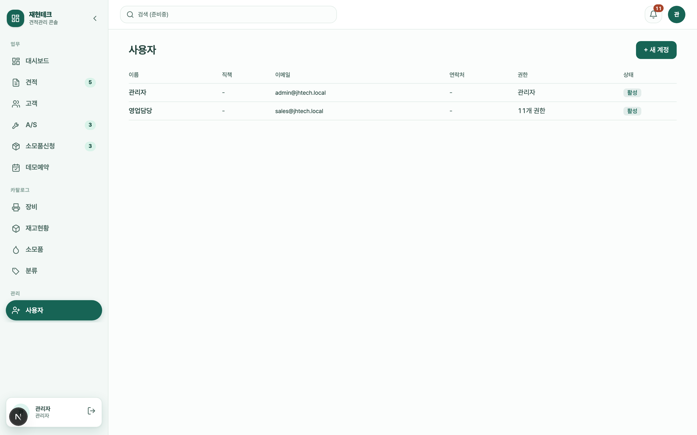

처리바의 버전 칩(예: "v2 (현재)")을 누르면 모든 버전과 발급일·금액·상태가 표로 보이고, 이전 버전과 무엇이 달라졌는지도 확인할 수 있습니다. 각 버전의 PDF도 따로 열 수 있습니다.
견적 삭제 관리자
버전이 하나면 견적 삭제, 여러 개면 이 버전 삭제 / 견적 전체 삭제 버튼이 있습니다. 삭제하면 PDF도 함께 지워지며 되돌릴 수 없습니다.
!
삭제는 되돌릴 수 없습니다. 확인 창에서 한 번 더 확인한 뒤 진행됩니다.
08출고의뢰서
납품 준비를 위한 출고의뢰서를 작성합니다. 출고의뢰서 작성 권한 필요
의뢰 상세 요약 패널의 출고의뢰서 버튼으로 엽니다(발행된 견적이 있어야 보입니다).
구성
고객정보 — 회사명·장비·연락처·설치 일시·주소가 의뢰/견적에서 자동으로 채워집니다.
장비 상세정보 — 프린터/커팅기에 따라 항목이 달라집니다(프린터: RIP·헤드·칼라·잉크 등 / 커팅기: 툴·카메라 등).
기본 준비사항 — 운송차량·전기 사전준비·입고 준비물 등 체크.
설치 현장정보 — 입고계획·출입문·전원·주차 등(설치 설문 내용이 초안으로 들어옵니다).
저장과 발행
버튼
결과
임시저장
작성 내용을 저장합니다.
발행 + PDF 생성
출고의뢰서를 확정하고 PDF를 만듭니다. (견적 발행 + 설치일 입력이 되어 있어야 가능)
ⓘ
발행 후에는 내용이 잠기고 PDF 다운로드만 가능합니다. 설치일은 의뢰 상세의 납품 일정에서 먼저 입력하세요.
09고객 관리
"고객" 메뉴에서 거래처를 검색·등록·수정합니다. 고객 등록·수정 권한 필요
고객 목록
통합 검색: 업체명·사업자번호·대표자·연락처·장부번호로 찾기(키보드 /로 검색창 포커스).
필터: 지역, 담당영업, 빠른 필터(거래중/미배정/최근활동).
컬럼(업체명·대표/담당·연락처·지역·최근활동)을 눌러 정렬할 수 있습니다.
오른쪽 위 + 고객 등록으로 새 거래처를 추가, CSV 내보내기로 목록을 내려받습니다.

고객 목록 — 통합 검색·필터·정렬, 위쪽에 고객 현황 카드.
고객 상세
업체 기본 정보·연락처·주소와 함께, 오른쪽에 견적 / 보유장비 / A/S / 소모품 탭으로 그 고객의 모든 거래 이력을 봅니다. 위쪽 견적 작성 버튼으로 이 고객의 수기 견적을 바로 만들 수도 있습니다.

고객 상세 — 왼쪽 주 연락처·정보 카드, 오른쪽 거래 활동 탭.
고객 등록·수정
+ 고객 등록(또는 상세의 수정)을 누릅니다.
기본 정보(업체명 필수)·연락처·사업장 정보를 입력합니다. 사업자번호와 전화번호는 입력하면 자동으로 형식이 맞춰집니다.
담당영업을 지정합니다.
보유장비를 표에 추가합니다(장비·시리얼번호·구입일자·설치주소).
아래 저장을 누릅니다. 저장하지 않고 나가려 하면 경고가 뜹니다.
✓
고객이 한 번도 없을 때는 "직접 입력" 또는 "견적요청에서 가져오기"로 시작할 수 있습니다. 보유장비를 잘 등록해 두면 고객이 A/S·소모품을 신청할 때 사업자번호만으로 장비가 자동으로 불러와집니다.
10A/S 신청 처리
고객이 홈페이지에서 넣은 A/S 신청을 접수·처리합니다.
위쪽 카드로 전체 / 접수(미처리) / 진행중 / 완료 건수를 한눈에 보고, 카드를 눌러 바로 필터링합니다.
업체명·접수번호·증상으로 검색하고, 상태·담당으로 거릅니다. 안 본 건에는 빨간 점이 붙습니다.
행을 누르면 상세(고객 정보·증상·사진)가 열립니다.

A/S 신청 — 상태별 카드, 미확인 고객 표시, 안 본 건 빨간 점.
처리 방법
주인이 없는 신청은 맡기로 내 담당으로 가져옵니다.
상태를 접수 → 진행중 → 완료로 바꿔가며 처리합니다.
ⓘ
"미확인" 표시가 붙은 신청은 고객 신원이 아직 검증되지 않은 건입니다. 연락(콜백)으로 확인하세요.
11소모품 신청 처리
고객이 보유 장비에 맞춰 신청한 소모품을 접수·처리합니다. A/S와 사용법이 같습니다.
카드(전체/접수/진행중/완료), 검색(업체명·신청자·접수번호·품목), 상태·담당 필터.
상세에서 업체 정보 + 신청 소모품(품목·수량) + 요청 메모를 확인합니다.
주인 없는 건은 맡기, 상태는 접수 → 진행중 → 완료로 처리합니다.

소모품 신청 — A/S와 같은 방식으로 접수·처리합니다.
ⓘ
소모품 단가·비용은 시스템에 표시되지 않습니다. 담당자가 확인 후 고객에게 별도로 안내합니다.
12데모예약 관리
데모센터(1곳) 예약을 달력으로 관리합니다. 같은 시간대에는 1건만, 15분 단위로 예약합니다.
왼쪽 월간 달력에서 날짜를 누르면 오른쪽에 그날의 시간표(09:00~18:00)가 나옵니다. 데모는 보라색, 납품은 파란색 점으로 표시됩니다.
+ 예약 등록으로 고객·장비·시간을 골라 새 예약을 만듭니다. 데모예약 권한 필요
시간표의 예약 블록을 누르면 상세를 볼 수 있습니다.

데모예약 — 왼쪽 월간 달력, 오른쪽 선택일 시간표(09:00~18:00).
13카탈로그 관리 관리자
견적·공개 홈페이지에 쓰이는 장비·소모품·분류·재고를 관리합니다.
장비
+ 새 장비로 등록합니다. 입력 항목: 장비명·모델·분류·기본가·상태, 사양(그룹별 항목, 견적서·홈페이지에 표시), 요약 불릿, 사진(첫 장이 대표 이미지), 견적서용 장비명·이미지, 제품 카탈로그 PDF, 옵션(포함/추가). 목록에서 행을 누르면 수정, 검색·상태 필터로 찾습니다.

장비 카탈로그 — 사진·모델·분류·기본가·상태.
재고현황
장비별 재고 수량·입고예정일·메모를 수기로 관리합니다(분류별로 묶여 표시). 수량이 0이면 자동으로 "품절"로 표시되고 입고예정일 칸이 강조됩니다. 행마다 따로 저장합니다.

재고현황 — 수량·입고예정일·메모를 행마다 저장.
ⓘ
영업담당자는 대시보드의 재고 링크로 재고를 읽기 전용으로 볼 수 있습니다(편집은 관리자만).
소모품
+ 새 소모품으로 등록합니다. 이름·단위·품번(SKU)·내부 참고가·상태·메모를 넣고, 적용 범위(어떤 분류 또는 장비에 쓰이는지)를 지정합니다. 적용 범위를 잘 지정해야 고객 소모품 신청에서 올바르게 매칭됩니다.
분류
장비 대분류(예: 프린터·커팅기) 아래 소분류를 둡니다. 대분류마다 견적 로고 종류(프린터/커팅기)를 정하면, 그 종류 장비의 견적서 좌상단 로고가 자동으로 맞춰집니다.

분류 관리 — 대분류·소분류 추가, 대분류별 견적 로고 지정.
✓
프린터 견적에 프린터 로고가 찍히게 하려면 각 대분류에 "견적 로고"를 한 번 지정해 두세요.
14사용자·권한 관리 관리자
"사용자" 메뉴에서 직원 계정을 만들고 권한을 정합니다.

사용자 목록 — 이름·직책·이메일·연락처·권한·상태.
새 계정 만들기
+ 새 계정을 누릅니다.
이름·이메일(로그인 ID)·직책·연락처를 입력합니다.
권한을 고릅니다: 영업담당(추천 기본) / 관리자 / 직접설정.
계정 생성을 누르면 임시 비밀번호가 표시됩니다. 복사해서 본인에게 전달하세요(첫 로그인 때 본인이 바꿉니다).
권한 종류(직접설정용)
묶음
대표 권한
견적
전체조회 · 재배정 · 상태변경 · 맡기 · 견적서 작성 · 메일 발송 · 출고의뢰서
고객
등록·수정 · 삭제 · 전체조회
A/S · 소모품 · 데모
전체조회 · 상태변경 · 맡기 · 데모예약 등록
카탈로그
장비 관리 · 소모품 관리
사용자
사용자 관리(관리자 = 모든 권한 자동 포함)
ⓘ
"전체조회" 권한이 없는 영업담당자는 본인이 맡았거나 주인이 없는 건만 봅니다. 전체를 봐야 하면 전체조회 권한을 켜 주세요.
계정 수정에서 할 수 있는 것
이름·직책·연락처 수정, 비밀번호 재설정(새 임시 비밀번호 발급).
하이웍스 ID 설정 — 이 담당자가 견적 메일을 보낼 때 쓰는 하이웍스 계정.
권한 변경, 계정 비활성화(본인 계정은 비활성화 불가).
15고객이 보는 화면(공개 포털)
고객은 로그인 없이 홈페이지(공개 포털)에서 신청합니다. 여기서 들어온 신청이 위에서 설명한 의뢰·A/S·소모품 목록으로 자동 접수됩니다. (참고용)
견적 요청
장비를 고르고 회사·사업자번호·연락처와 (선택) 설치 환경·현장 사진을 입력해 제출 → 견적 목록 "접수"로 들어옴.